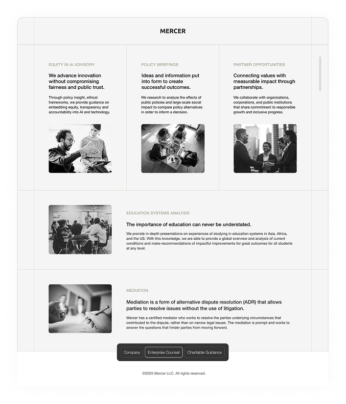

Crafting a cohesive visual language to attract clients & partners
User Experience, Visual & Interaction Design, Content Strategy, and Testing.
View Mercer’s siteElevated type & voice
An actionable voice and typeface was created to establish clear and concise messaging that underscores Mercer’s product’s value propositions. Research uncovered that using active language and emphasizing Mercer’s services, motivated visitors to engage and take the next step, whether it’s learning more or signing up for their services and partnership opportunity. This approach highlighted what sets the Mercer apart but also makes their value clear and accessible to is audience.
abcdefghijklmnopqrstuvwxyz
abcdefghijklmnopqrstuvwxyz
1. Ubuntu font family
2. Helvetica Neue
We are a consulting firm specialize in educational analysis, equity investments, policy research, strategic planning, representation, and mediation. At Mercer, we empower clients by providing the resources they need to achieve their goals. We believe success requires both access to essential resources and a willingness to embrace innovation. Through tailored consultation, we help clients shape their vision and achieve concrete results.

Responsive & scalable pages
Mercer’s website is fully responsive, offering a seamless experience across desktop, tablet, and mobile. With an intuitive content management flow ensures that pages can be easily added, removed, or edited.

Results & impact
Mercer’s informative and actionable voice now underscores its value propositions. Along with a mobile-first content strategy and cohesive visual language, the brand’s digital presence has been elevated. By incorporating a responsive and scalable user experience, the site seamlessly adapts to all devices, ensuring accessibility for a wider audience. Collaborative stakeholder workshops drove alignment on the vision and goals, resulting in a unified design that resonates with both potential clients and partners. The website not only improved user engagement and satisfaction but also strengthened the brand’s appeal, directly contributing to increased inquiries and partnership opportunities. View Mercer’s site